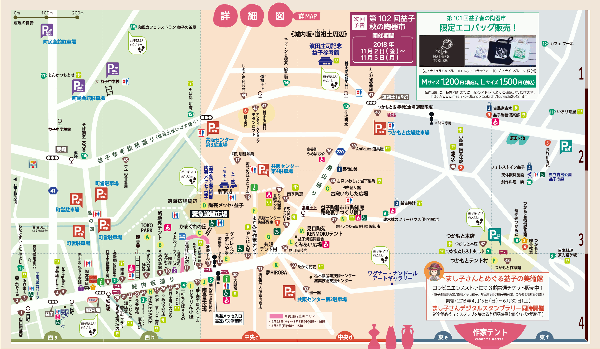
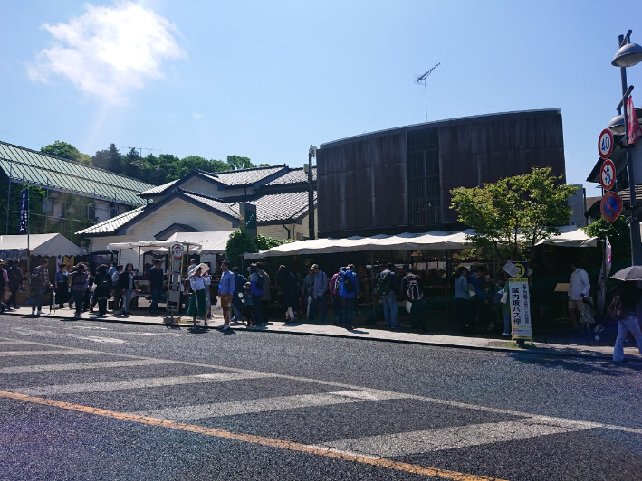
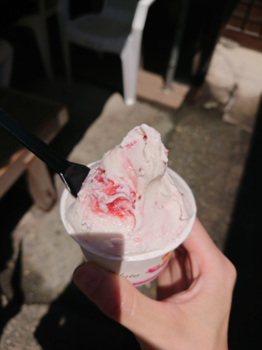
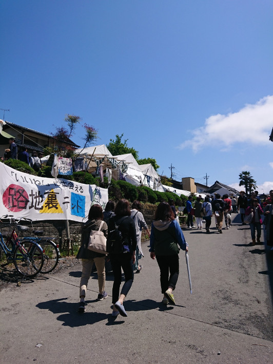
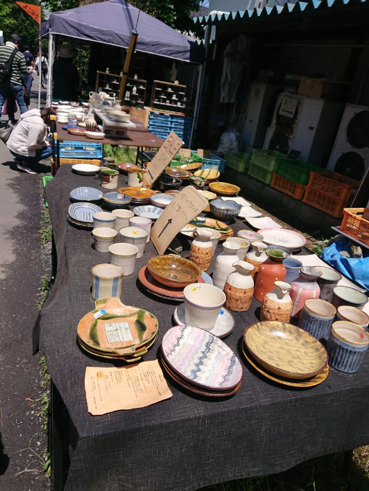
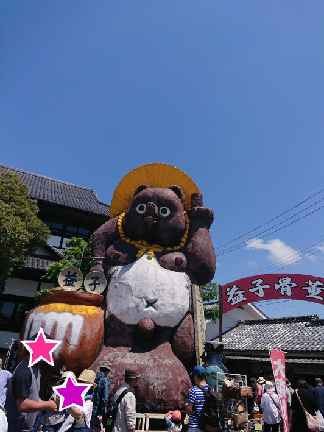
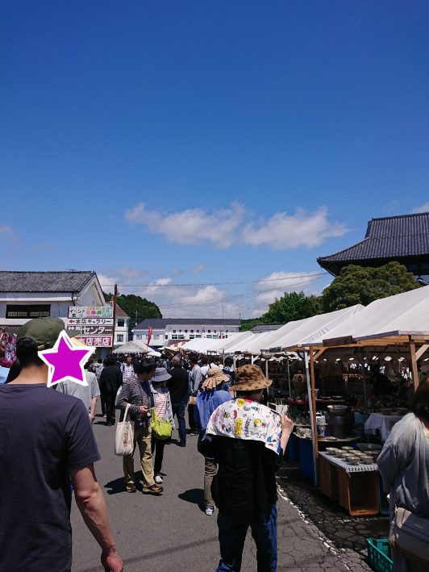
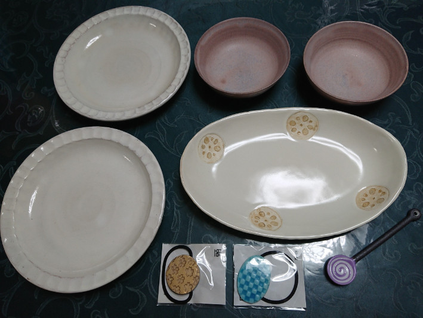

益子陶器市に行ってきた
こんにちは、ゆずあふろです。
先週の話ですが、ゴールデンウィークということで、以前から行ってみたかった益子の陶器市に出かけてきました。
この記事では「初参加ですが、こんな感じで楽しみました！」というのをレポートしてみようと思います。
益子陶器市って？？
益子の陶器市は、栃木県の益子町で、毎年春と秋の年2回開催されていて、春はゴールデンウィークに、秋は11月の初旬に開催されているようです。
今回私が行ってきたのは、「第101回益子春の陶器市」です。
http://blog.mashiko-kankou.org/ceramics_bazaar/
2018年4月28日(土)〜5月6日(日)に開催されていて、私は5月4日(金)に行きました。
どうやって行くの？？
そもそも益子町がどこにあるのかイメージできていませんでしたが、今回私は埼玉県さいたま市から出発し、行きは電車を乗り継いで、帰りはバスと新幹線を乗り継いでみました。
相当な混雑が見込まれるという話だったので、なるべく朝早く出て、遅くならないうちに帰ってこようということになりました。
[行き]
大宮 〜 小山 (JR宇都宮線) 07:26 - 08:15
小山 〜 下館 (JR水戸線) 08:22 - 08:44
下館 〜 益子 (真岡鉄道真岡線) 08:52 - 09:36
[帰り]
益子駅 〜 宇都宮 (東野バス) 14:05 - 15:40 (渋滞込み)
宇都宮 〜 大宮 (東北新幹線) 16:34 - 16:58
帰りはやはり渋滞してしまっていて、バスが30分くらい遅れてしまいました。
あと、宇都宮でお土産の餃子とか見てたタイムロスがありますね(^^;)
会場はどんな感じ？？
駅に着いたら何とかなるんじゃないかと思って、あまり予習をして行かなかったのですが、想像以上に会場が広くて、お店もかなりたくさんある！！ ので、予習をして行くことをお勧めします。
まず絶対必要なのが 陶器市マップ です。益子町観光協会のホームページにリンクがあります。
↓↓ 2018年春版の益子陶器市マップのPDFファイルのリンクです。
http://www.mashiko-kankou.org/ceramics_bazaar/image/pdf/map_jap201804.pdf
このマップは益子駅や城内坂通りの入口などで、印刷されたものが配布されていました。
心配ならばあらかじめ印刷して行った方がよいかもです。

(陶器市マップの詳細図の一部のスクリーンショットを使用させていただいております。)
会場は、だいたい以下のエリアに分かれているようでした。
- 城内坂通り沿いの常設店舗、テント村(マップ左下)
- 共販センターや陶芸メッセあたりの店舗、テント村(マップ中央)
- 里山通り沿いの常設店舗やテント村(マップ中央)
- 少し離れたところにある つかもとの店舗、テント村
こんなに広いという事を理解できてなくて、城内坂通りと共販センターのあたりしか見れませんでした。(単純に疲れたというのもあります。)
ちなみに益子駅から城内坂通りの入口までは少し距離があって、20分強歩きました。
だいたいのイメージができるように写真を貼っておきます。
写真は午前中のものが多いのですが、午後になるともっと人が増えていました。
城内坂通り


路地裏テント

よこみち作家テント

共販テント村


戦利品
で、何を買ったの？？ってなると思うのですが、こんなのを買いました〜〜！！
(もう少しいい感じの写真を撮れればよいのですが・・・(^^;))

- 粉引きの丸皿 (¥2000 × 2)
- レンコンの模様の長皿 (¥1900)
- ピンクの小鉢 (¥900 × 2)
- ぐるぐる模様のスプーン (¥400)
- ヘアゴム (¥800、¥500)
値段がうろ覚えなので、正確ではないのですが、だいたいこれぐらいでした。
ずっとお魚用のお皿が欲しかったので、レンコンのお皿を見つけた時はとても嬉しかったです。
感想など
全般
- とにかく広いので、全部見たい人は体力が必要
- 午前中の方が少し空いている
- 器がたくさんあるので選びたい放題
- 飲食店もそこそこ充実
- フェス感覚で楽しめる！
持って行ってよかったもの
- 帽子、丈夫なリュック、1000円札
初参加レポートいかがだったでしょうか？
とても満足な買い物ができたので、また機会があったら行きたいと思います！！